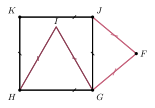
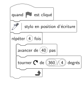
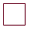
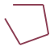
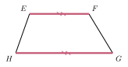

01
Question
Calculer : $A = x^2 + 4x$, pour $x = -2$.
$A = -2 \times (-2) + 4 \times (-2)$
$A = 4 + (-8)$
$A = {\color{#EB7F73}\boldsymbol{-4}}$
$A = 4 + (-8)$
$A = {\color{#EB7F73}\boldsymbol{-4}}$





| Dé \ Boule | 1 (bleue) | 2 (rouge) | 3 (rouge) | 4 (rouge) | 5 (bleue) | 6 (rouge) |
|---|---|---|---|---|---|---|
| 1 | gagné | perdu | perdu | perdu | gagné | perdu |
| 2 | perdu | perdu | perdu | perdu | gagné | perdu |
| 3 | perdu | perdu | perdu | perdu | gagné | perdu |
| 4 | perdu | perdu | perdu | perdu | gagné | perdu |
| 5 | perdu | perdu | perdu | perdu | gagné | perdu |
| 6 | perdu | perdu | perdu | perdu | perdu | perdu |